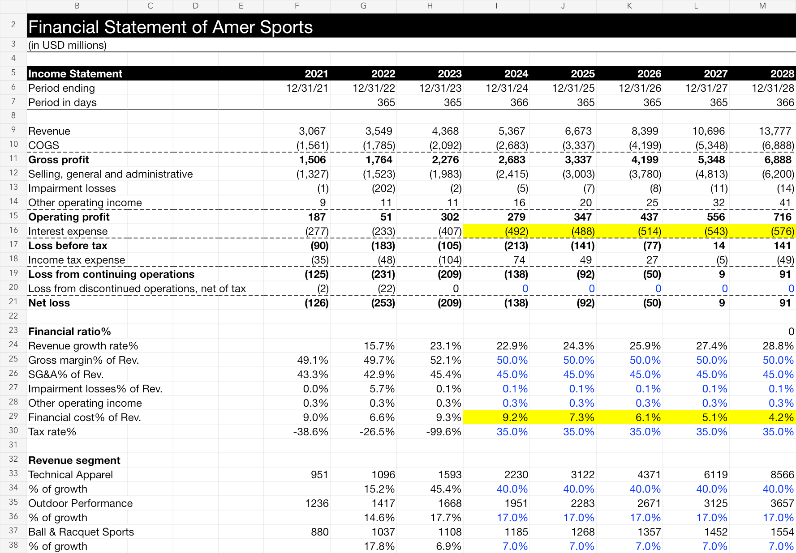
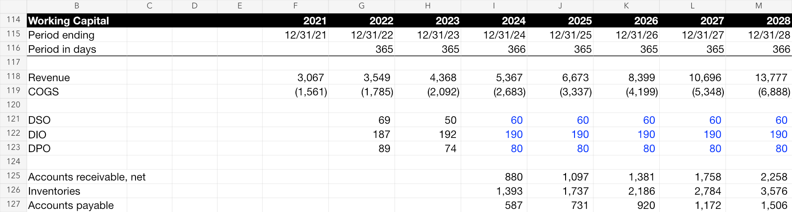
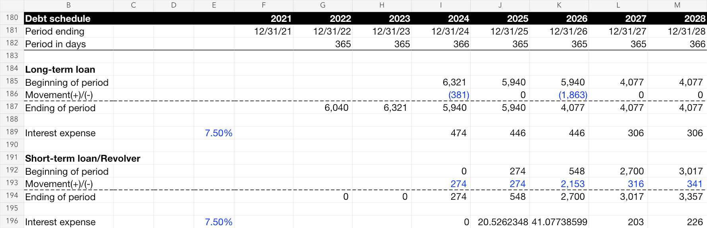
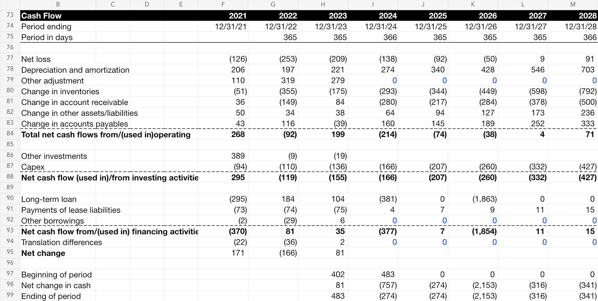
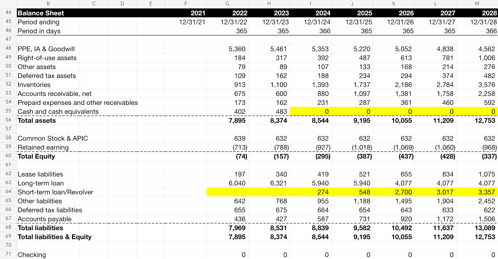

FINANCIAL MODELLING · EXCEL
Amer Sports
Integrated Three-Statement Forecast Model
Business: Amer Sports operates sports and outdoor brands including Arc’teryx, Salomon and Wilson.
Data: Supplied Excel model with historical inputs and analyst forecasts; historical inputs have not been independently verified against filings. 2023 Annual Report (PDF)
- Segment Revenue & Profit Forecast
- Income Statement, Balance Sheet & Cash Flow
- Working Capital, Capex & Lease Schedules
- Debt, Interest & Revolver Modelling
Data & periods
- Income statement and cash flow: 2021–2023 historical inputs.
- Balance sheet: 2022–2023 historical inputs.
- Annual forecast: 2024–2028.
- Financial amounts: USD millions.
Workbook structure
- model: linked statements, assumptions and schedules.
- PL: historical income statement.
- BS: historical balance sheet and mapping.
- CF: historical cash flow and mapping.
MODEL FLOW
Segment revenue → Profit → Cash & fundingGrowth and operating assumptions feed the supporting schedules and three statements.
2024–2028 figures are model forecasts, not reported results or company guidance.Model contents
Explore the work
Segment Revenue Forecast
Technical Apparel, Outdoor Performance and Ball & Racquet Sports revenue forecasts.
The model applies annual growth assumptions of 40%, 17% and 7%, respectively, for 2024–2028. Segment revenue rolls into the consolidated income statement.
View workbook evidence
EVIDENCE · WORKBOOK PREVIEW
model!B32:M38 · Rendered from the supplied workbook. Click to enlarge.Income Statement Forecast
Revenue, cost of sales, gross profit, SG&A, interest, tax and net income.
Forecast gross margin is 50% and SG&A is 45% of revenue. Interest links to the lease and debt schedules. A 35% tax assumption applies to pre-tax profit or loss.
Working Capital & Asset Schedules
Receivables, inventory, payables, capex and depreciation.
DSO of 60 days, DIO of 190 days and DPO of 80 days drive operating balances. Capex and depreciation are modelled at 3.1% and 5.1% of revenue. Additional schedules cover leases, deferred tax and other assets and liabilities.
View workbook evidence
EVIDENCE · WORKBOOK PREVIEW
model!B101:M178 · Rendered from the supplied workbook. Click to enlarge.Debt & Funding Model
Long-term debt repayments, revolver borrowing and interest expense.
Cash deficits feed the revolver schedule. The model assumes long-term repayments of $381 million in 2024 and $1,863 million in 2026. Debt interest uses a 7.5% rate and opening balances.
View workbook evidence
EVIDENCE · WORKBOOK PREVIEW
model!B180:M196 · Rendered from the supplied workbook. Click to enlarge.Cash Flow Forecast
Operating, investing and financing cash flows, with a cash roll-forward.
Net income, non-cash items and working capital changes feed operating cash flow. Capex and debt movements feed investing and financing cash flow. The cash roll-forward shows the funding gap before revolver borrowing.
View workbook evidence
EVIDENCE · WORKBOOK PREVIEW
model!B73:M99 · Rendered from the supplied workbook. Click to enlarge.Balance Sheet & Reconciliation
Forecast assets, liabilities, equity and balance sheet checks.
Operating and funding schedules feed the balance sheet. The Checking row compares total liabilities and equity with total assets. The saved workbook shows zero differences for 2022–2028.
View workbook evidence
EVIDENCE · WORKBOOK PREVIEW
model!B44:M71 · Rendered from the supplied workbook. Click to enlarge.Model scope
This is a single-case financial forecast. The workbook does not include a DCF valuation, scenario selector or Power BI dashboard. Forecast growth rates, margins, tax treatment and financing assumptions are model inputs.
Source and reconciliation notes
The supplied workbook is the source for this project page. Original filing links are not embedded in it. The historical figures have not been independently checked against filings for this upload.
The 2023 cash flow mapping shows $198.9 million operating cash flow against $199.0 million on the CF sheet. Its cash roll-forward ends at $483.3 million against $483.4 million on the BS sheet. These $0.1 million differences remain in the original workbook.
The zero balance sheet checks are saved results, not a new audit or a full recalculation test. The download preserves the original workbook and formulas.
Download the model
Original Excel workbook with all four worksheets and editable forecast assumptions.
Download Excel